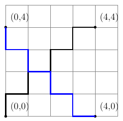

Manhattan distance algorithm - minimum distance
At first we assume that we have points within standard coordinate system.
Let us assume that we use only its first quarter, so \(x \geq 0\) and \(y \geq 0\).
Equation to calculate manhattan distance between two points, \(P_{1}(x_{1},y_{1})\) and \(P_{2}(x_{2},y_{2})\) is:
$$ D(P_{1}, P_{2}) = \vert x_{1} - x_{2} \vert + \vert y_{1} - y_{2} \vert\ $$
Idea of the algorithm is to find minimum manhattan distance of a point to the given set of points. In other words, imagine that you have set of points like in matrix below:
$$\begin{array}{ccccc}
1 & 0 & 0 & 0 & 1 \\
0 & 0 & 0 & 0 & 0 \\
0 & 0 & 0 & 0 & 0 \\
0 & 0 & 0 & 0 & 0 \\
1 & 0 & 0 & 0 & 1
\end{array}$$
We are looking for the distance of the point that is closest to all 1's. We will use few toy examples to explain this algorithm.
Step 1 of the algorithm is as follows:
- Find miminum sum of \(x\) and \(y\)
- Find maximum sum of \(x\) and \(y\)
- Find minimum difference of \(x\) and \(y\)
- Find maximum difference of \(x\) and \(y\)
But what is the reason behind this step? Let us take a look again ot our example and imagine that array given is placed in the corner of coordinate system. Then, our 1's will have following coordinates:
$$\begin{array}{ccccc}
(4,0) & 0 & 0 & 0 & (4,4) \\
0 & 0 & 0 & 0 & 0 \\
0 & 0 & 0 & 0 & 0 \\
0 & 0 & 0 & 0 & 0 \\
(0,0) & 0 & 0 & 0 & (0,4)
\end{array}$$
Therefore we will calculate four following values:
- \(minSum = 0\) (from point (0,0))
- \(maxSum = 8\) (from point (4,4))
- \(minDiff = -4\) (from point (0,4))
- \(maxDiff = 4\) (from point (4,0))
Each value corresponds to each point and this is not coincidence. By these values we determine "corners" of our area, so the points which are placed the furthest to north, south, east and west.
Of course, with this example we have four different points, but it does not always have to be true - e.g. imagine situation where we have only three points that form a triangle.
Ok, let's now take a look at Step 2 - calculate:
- difference between \(maxSum\) and \(minSum\)
- difference between \(maxDiff\) and \(minDiff\)
In our example we receive:
- \(rangeSum = maxSum - minSum = 8 - 0 = 8\)
- \(rangeDiff = maxDiff - minDiff = 4 - (-4) = 8\)
These two ranges actually denote manhattan distance between corresponding points. Indeed, distance between point (4,4) described by maxSum and point (0,0) described by minSum is equal to 8.
Similar case applies to points (4,0) - maxDiff and (0,4) - minDiff.

Step 3
In third step we have to determine two values, \(s\) and \(b\). Algorithm says:
- Calculate \(s\) as minimum value of \(rangeSum\) and \(rangeDiff\)
- Calculate \(b\) as maximum value of \(rangeSum\) and \(rangeDiff\)
In other words:
- \(s = min(rangeSum, rangeDiff)\)
- \(b = max(rangeSum, rangeDiff)\)
If \(b\) is odd then minimum distance is \(\lceil \frac{b+1}{2} \rceil\).
Answer is the same if both \(b\) and \(s\) are even and equal and additionally sum of values \(minSum\) and \(minDiff\) is odd.
Otherwise answer is \(\frac{b}{2}\).
Ok, let's debug it, using at first our original example. In this case we have following values:
- \(s = min(8,8) = 8\)
- \(b = max(8,8) = 8\)
Our example is perfectly symmetrical therefore we receive same value of \(s\) and \(b\). So let's examine values \(minSum\) and \(minDiff\).
$$minSum + minDiff = 0 - 4 = -4$$
This sum is even. Therefore we can see that none of first two conditions of looking for final answer is satisfied. So our answers is \(\frac{b}{2}=4\)
Ok, first of all, why only value \(b\) is used to find an answer (as it is either \(\lceil \frac{b+1}{2} \rceil\) or \(\frac{b}{2}\))? Well, we are looking for minimum distance and value \(b\) corresponds to distance between two furthest points. So we know that all other points are closer to each other and that is why we take \(b\) for final calculation.
Now we have three options. In first one \(b\) is odd, e.g. like in figure below.
In this example, point which is exactly in the middle of the line segment, has coordinates \((2, 2.5)\). Thus, we have to move to the nearest place with total number. We have to move either to \((2,2)\) or \((3,2)\). No matter which way we move, we will shift one unit further from one of the points. That is why we divide value \(b\) by two and add extra 1 to result. Like here we get \(5+1\) divided by \(2\) which gives us \(3\) as an answer (remember, this is distance to the point which is in the "middle" of area determined by all points).
In second variant, like in our example, we have \(b\) value even, so after division we are already in proper middle value, i.e. having total numbers as coordinates.\newline
Ok, but what about third option, exception where we have even value \(b\), yet we need to add 1 to the final result? Till now, both examples formed a rectangle but we need to keep in mind that it is not always the case. This variant will happen in situation like given in figure below.
Calculation in this example will be as follows:
- \(minSum = 1\) (from point (1,0))
- \(maxSum = 5\) (from point(3,2))
- \(minDiff = -2\) (from point(1,3))
- \(maxDiff = 2\) (from point(3,1))
- \(rangeSum = 5-1 = 4\)
- \(rangeDiff = 2-(-2) = 4\)
- \(b = s = 4\)
- \(minSum + minDiff = 1 - 2 = -1\) which is even
Final answer is therefore 3 and not 2, as usually expected.
In following figure we can observe, how diagonals look like for these points.
Here we can see that even though length of both diagonals is even, they do not cross in "proper" point (the one with total numbers). So, looking at "manhattan" diagonals, we can observe two crossing points, (1,2) and (2,2). No matter which one we choose, we will be closer to some points and further to other ones. Hence, here we also need to add 1 to final result.